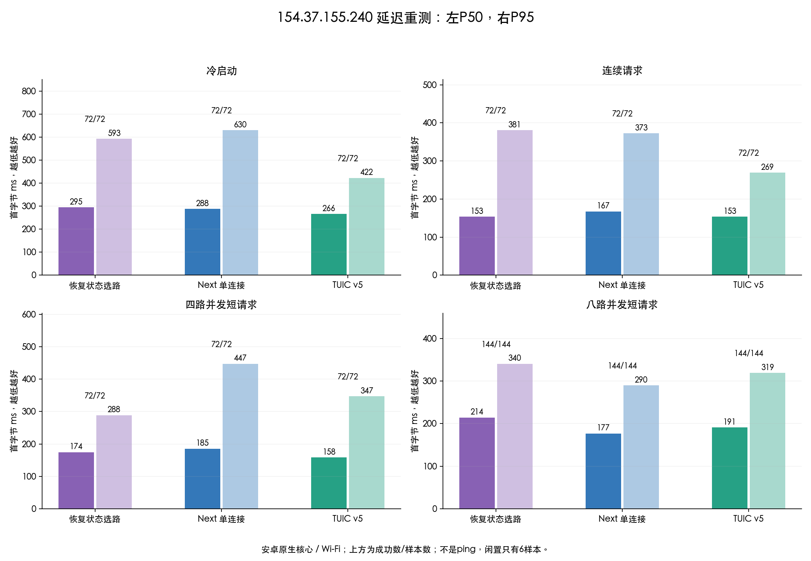

2026-11-23 · 安卓HONOR TFY-AN00 / Android12 · 相同冻结实现与参数
Next单连接在四类下载的总体吞吐都略高，但单文件和滚动差距很小；六轮不足以宣布所有网络下的稳定优胜。速度中八路下载单连接比恢复选路约高7%，其余差距更小。延迟中TUIC冷启动、连续请求P95较低；单连接在固定目标带载和两个真实网站带载P95较低；恢复选路在四路短请求P95较低，没有全面领先。
三种配置所有正式下载文件均完整校验、延迟请求均成功。辅助直连TCP对照三次均超时，只收到部分文件，保留为失败，不能拿部分速率证明共同带宽上限。TCP快照有重传且使用CUBIC，而代理使用QUIC/BBR；不同时间、路径和拥塞控制不能直接归因。
| 场景 | 恢复状态选路 | Next 单连接 | TUIC v5 |
|---|---|---|---|
| 64MiB单文件 | 37.97 | 38.09 | 37.00 |
| 四路×16MiB | 37.30 | 38.17 | 36.59 |
| 八路×8MiB | 35.69 | 38.28 | 36.30 |
| 四路滚动12×8MiB | 36.84 | 37.37 | 36.72 |

| 场景 | 恢复状态选路 | Next 单连接 | TUIC v5 |
|---|---|---|---|
| 冷启动 | 593 | 630 | 422 |
| 连续请求 | 381 | 373 | 269 |
| 四路短请求 | 288 | 447 | 347 |
| 八路短请求 | 340 | 290 | 319 |
| 固定目标严格带载 | 754 | 640 | 660 |
| 闲置20秒后首次（6次） | 1766 | 379 | 268 |
| Example带载 | 932 | 758 | 870 |
| Google带载 | 877 | 628 | 752 |

Next恢复状态选路为双通道且只对新流选路，单连接为一条入口；TUIC使用原生池，未人为双开。显式BBR名称相同不代表实现和窗口默认值完全一致，不是严格等连接数实验。原生核心Wi-Fi测试，不是正式App/TUN、蜂窝、锁屏能耗或隐蔽性验收。
手机VPN与唤醒设置已恢复，临时入口、私钥和hosts映射已清理，原有服务器服务不覆盖。最终状态 · 速度自检 · 延迟自检 · 方法与IP修正记录 · 文件SHA256